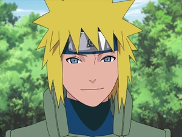

C.E.O and FOUNDER:
Naruto Uzumaki ( Uzumaki Naruto) is a shinobi of Konohagakure's Uzumaki clan.
He became the jinchūriki of the Nine-Tails on the day of his birth — a fate that caused him to be shunned by most of Konoha throughout his childhood.
After joining Team Kakashi, Naruto worked hard to gain the village's acknowledgement all the while chasing his dream to become Hokage.
In the following years, through many hardships and ordeals, he became a capable ninja, regarded as a hero both by the villagers, and soon after, the rest of the world, becoming known as the Hero of the Hidden Leaf ( Konohagakure no Eiyū, literally meaning: Hero of the Hidden Tree Leaves).
He soon proved to be one of the main factors in winning the Fourth Shinobi World War, leading him to achieve his dream and become the village's Seventh Hokage (Nanadaime Hokage, literally meaning: Seventh Fire Shadow).
He became the jinchūriki of the Nine-Tails on the day of his birth — a fate that caused him to be shunned by most of Konoha throughout his childhood.
After joining Team Kakashi, Naruto worked hard to gain the village's acknowledgement all the while chasing his dream to become Hokage.
In the following years, through many hardships and ordeals, he became a capable ninja, regarded as a hero both by the villagers, and soon after, the rest of the world, becoming known as the Hero of the Hidden Leaf ( Konohagakure no Eiyū, literally meaning: Hero of the Hidden Tree Leaves).
He soon proved to be one of the main factors in winning the Fourth Shinobi World War, leading him to achieve his dream and become the village's Seventh Hokage (Nanadaime Hokage, literally meaning: Seventh Fire Shadow).


C0-Founder:
Sasuke Uchiha (うちはサスケ, Uchiha Sasuke) is one of the last surviving members of Konohagakure's Uchiha clan. After his older brother, Itachi, slaughtered their clan, Sasuke made it his mission in life to avenge them by killing Itachi. He is added to Team 7 upon becoming a ninja and, through competition with his rival and best friend, Naruto Uzumaki, Sasuke starts developing his skills, but eventually grows dissatisfied with his progress. He defects from Konoha so that he can acquire the strength needed to exact his revenge and master the Cursed Seal of Heaven. His years of seeking vengeance and his actions that followed become increasingly demanding, irrational and isolates him from others, leading him to be branded as an international criminal. After learning the truth of his brother's sacrifice, later proving instrumental in ending the Fourth Shinobi World War, and being happily redeemed by Naruto, Sasuke decides to return to Konoha and dedicate his life to help protect the village and its inhabitants, becoming referred to as the "Supporting Kage" (支う影, Sasaukage, literally meaning: Supporting Shadow).
GOD OF GENJUTSU
Itachi Uchiha (うちはイタチ, Uchiha Itachi) was a shinobi of Konohagakure's Uchiha clan who served as an Anbu Captain. He later became an international criminal after murdering his entire clan, sparing only his younger brother, Sasuke. He afterwards joined the international criminal organisation known as Akatsuki, whose activity brought him into frequent conflict with Konoha and its ninja — including Sasuke who sought to avenge their clan by killing Itachi. Following his death, Itachi's motives were revealed to be more complicated than they seemed and that his actions were only ever in the interest of his brother and village, making him remain a loyal shinobi of Konohagakure to the very end.

BROKEN HERO
Obito Uchiha (うちはオビト, Uchiha Obito) was a member of Konohagakure's Uchiha clan. He was believed to have died during the Third Shinobi World War, his only surviving legacy being the Sharingan he gave to his teammate, Kakashi Hatake. In truth, Obito was saved from death and trained by Madara, but the events of the war left Obito disillusioned with reality, and he inherited Madara's plan to create an ideal world. Resurfacing under the names of Tobi (トビ, Tobi) and Madara Uchiha himself, Obito subtly took control of the Akatsuki, using them as a means to advance his machinations, eventually going public and starting the Fourth Shinobi World War. However, towards the war's conclusion, Obito had a change of heart and, as atonement, sacrificed his life to save the same world he sought to replace.
COPY NINJA
Kakashi Hatake (はたけカカシ, Hatake Kakashi) is a shinobi of Konohagakure's Hatake clan. Famed as Kakashi of the Sharingan (写輪眼のカカシ, Sharingan no Kakashi), he is one of Konoha's most talented ninja, regularly looked to for advice and leadership despite his personal dislike of responsibility. To his students on Team 7, Kakashi emphasises the importance of teamwork; he himself received this lesson, along with the Sharingan, from his childhood friend, Obito Uchiha. After the Fourth Shinobi World War, Kakashi becomes Konoha's Sixth Hokage (六代目火影, Rokudaime Hokage, literally meaning: Sixth Fire Shadow).

YELLOW FLASH(NARUTO FATHER)
Minato Namikaze (波風ミナト, Namikaze Minato) was the Fourth Hokage (四代目火影, Yondaime Hokage, literally meaning: Fourth Fire Shadow) of Konohagakure. He was renowned all over the world as Konoha's Yellow Flash (木ノ葉の黄色い閃光, Konoha no Kiiroi Senkō, English TV: Yellow Flash of the Leaf). He died during the Nine-Tailed Demon Fox's Attack, sacrificing his life to seal a part of the Nine-Tails into his newborn son, Naruto Uzumaki.
